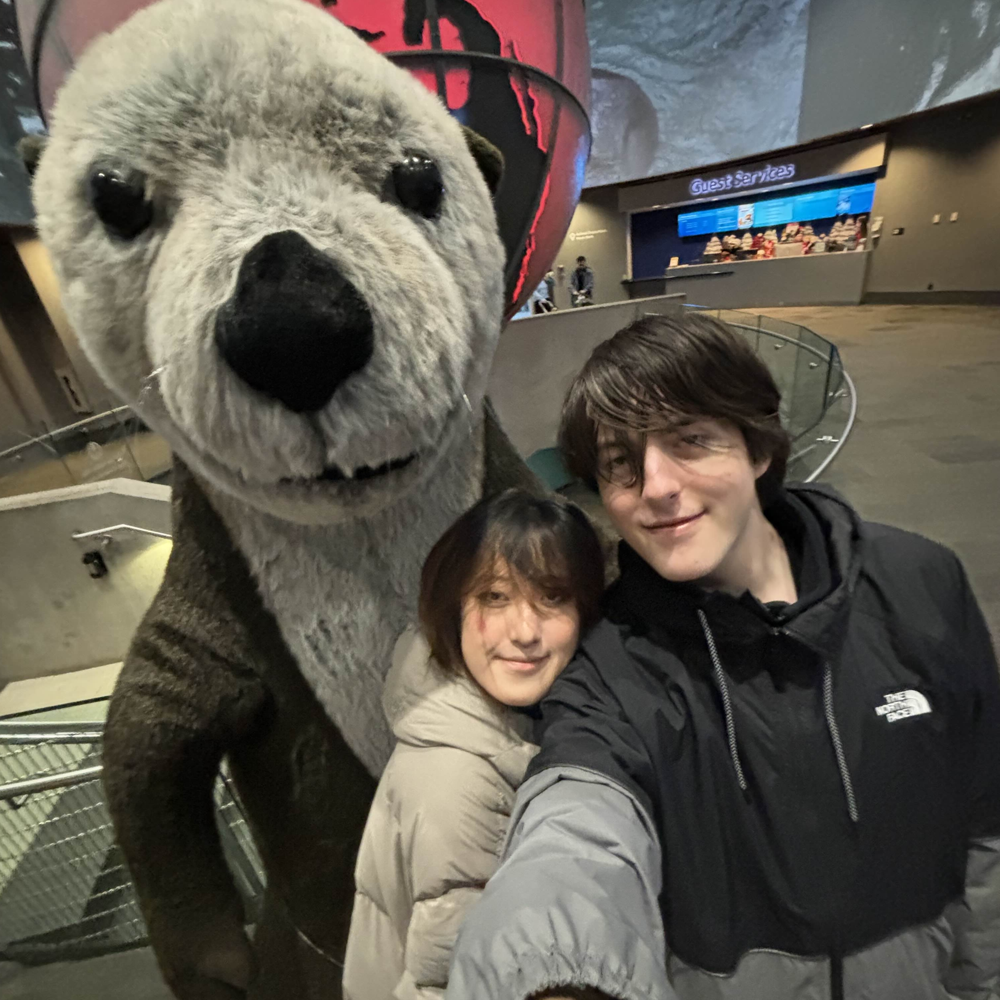
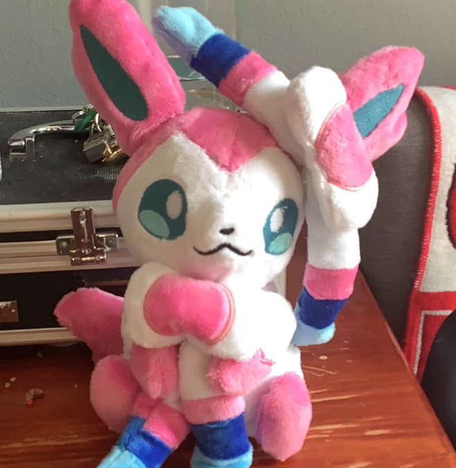
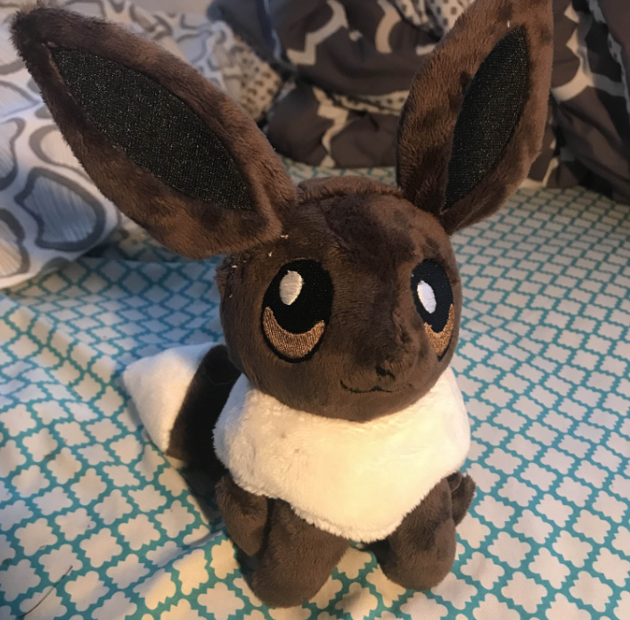
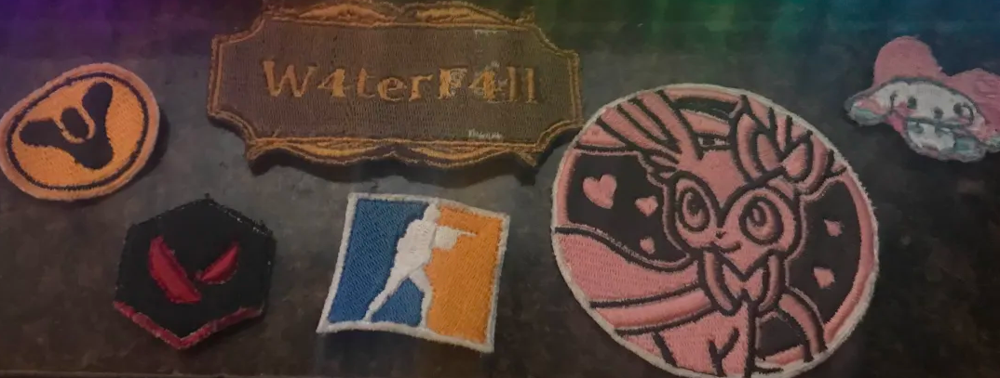
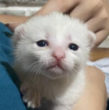

My name is Aidan Jozefiak, and I'm 19 years old.

me, my girlfriend enlin, and luna the otter
Here are some things I like doing!
- Programming
- To view my projects, click HERE!
- Gaming
- Counter Strike 2
- Valorant
- Pokemon
- Minecraft
- Roblox
- Terraria
- Rhythm Games
- Incremental/Clicker Games
- Sewing
- Plushies!


the first plushies i made ♥
- Embroidery Patches

embroidery patches i've made
I graduated high school in 2023 at Xaverian High School.
I'm currently enrolled at St. John's University, and I'm a 2nd year Computer Science major.
At my current rate, I'm set to graduate next year!
Here's a table of my completed courses. (not including classes im currently taking)
| University Core |
Computer Science |
College Core |
FYS 1000 20th Century History NYC |
CUS 1115 Computer Prog Fund I |
MTH 1730C Core: University Calculus I |
| ENG 1100 Lit in a Global Context |
CUS 1116 Computer Prog Fund II |
MTH 1010 Calculus II |
| FYW 1000 English Composition |
CUS 1126 Intro to Data Structures |
MTH 1013 Probability and Statistics I |
| HIS 1000 Emergence of a Global Society |
CUS 1156 Software Design Methods |
ECO 1002 Principles of Economics II |
| PHI 1000 Phil of the Human Person |
CUS 1185 Data Security & Cryptography |
| PHI 3000 Metaphysics |
NET 1011 Introduction to Networks |
| SPE 1000 Public Speaking |
| THE 1000 Perspectives on Christianity |
| ECON 1320 Poverty & Income Inequality |
| PHI 2200 Ethics |
| THE 2400 Christian Spirituality & Myst |
I've been interested in programming since I was a kid, and have picked up a few skills along the way!
My experience is mostly from small webgames and programs I've made, but I also have some experience with game development software languages.
I have good experience with:
- HTML
- CSS
- JavaScript
- Python
- Java
I have some experience with:
- PHP
- C#
- GDScript
- Lua
- Swift

While I don't have any formal work experience, I do have a few projects I've worked on!
A browser based, procedurally generated rhythm game based on games such as Osu! Mania and Piano Tiles.
The difficulty gradually scales, and you're also able to input custom patterns.
It's mostly intended as a practice tool, and does not contain actual music.
To try it out, click HERE!
During my senior year of High School, me and a group of 3 other friends worked together to build a drowsy driving alarm.
Drowsy driving accounts for ~10% of all road crashes, and causes similar effects to drunkenness.
Our device uses eye detection to send an alert when the driver's eyes are closed for an abnormaly large period of time.
The alert sounds an alarm, causes the headrest to vibrate, and calls an emergency contact.
To see it in action, click below!
Another browser game, where your goal is to bake as many cookies as possible.
It was inspired by other incremental games such as Cookie Clicker.
The game is short and unfinished, and it's one of the first web projects I ever worked on.
To try it out, click HERE!
I mostly listen to rap and electronic music.
Heres a few of my favorite artists!
- Kendrick Lamar
- Tyler the Creator
- J. Cole
- Camellia
- Jane Remover
- femtanyl
My current favorite song is: Like Him by Tyler the Creator (its so sad..)
To listen to my playlists, click HERE!
My current favorite YouTubers are: Vinesauce & Vargskelethor
I've also been watching more shows recently, so here's a few of my favories!
- The Office
- The Good Place
- Squid Game
- South Park
- MasterChef
My current favorite show is: Brooklyn 99 ^_^
I haven't seen many movies, but my current top pick would be Hot Frosty (it's PEAK)
Here are some fun/interesting websites that I've found over my time on the internet!
A giant collection of personal websites, brimming with creativity and early 1990s-2000s vibes.
It's easy to get lost for hours going down rabbit holes of links, and it can be really inspiring creatively looking at what other people have made.
An operating system in your browser, packed with games, tools, and a lot of charm.
The games can be pretty fun, but they're mostly joke programs.
A collection of games and other informative programs made by Neal.
My personal favorites include Infinite Craft, Spend Bill Gate's Money, The Password Game, Stimulation Clicker, and Internet Artifacts.
A bunch of fun, random, and useless websites, all at the press of a button.
This is one of the earliest websites I remember showing my friends, and can be pretty fun to browse when bored.
One of the earlist and most popular incremental games, where the goal is to make as many paperclips as possible.
An easy way to sink a few hours when bored in class.
A free tool that allows you to make pixel art and animations.
It's pretty fun to play around with, and anything you make can be exported and used elsewhere.
This website has a ton of old console games, from the Atari 2600 all the way up to the Wii.
I mainly use this website to download old Pokemon games from the DS and Wii era.
Here are some things I've made as part of my web development class!

oh... thats all...